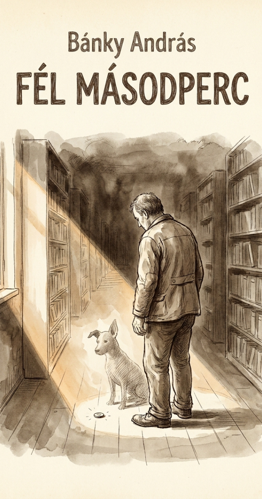

Szilágyi Gábornak ötvennégy éves koráig egyetlen barátja volt: a kutyája. A kutya kilencéves korában meghalt, és Gábor úgy találta, hogy a világ, amely addig szűk volt, most üres lett. A kettő nagyon nem ugyanaz.
Gábor a városi könyvtárban dolgozott. Nem könyvtárosként, hanem karbantartóként. Ő cserélte a neoncsöveket, javította a csöpögő csapokat, és télen ő lapátolta a havat a bejárat előtt. A könyvtárosok bólintottak neki reggel, és bólintottak este. A nevét a legtöbben nem tudták.
A kutya halála után három héttel Gábor egy ötforintos érmét talált az olvasóterem padlóján. Lehajolt érte, és amikor felegyenesedett, a szeme találkozott egy könyv gerincével. A könyv címe: Hogyan szerezzünk barátokat és befolyásoljuk az embereket. Carnegie. 1936, első kiadás, magyarra fordítva 1940-ben, javított kiadás 1982-ben. Kopott, kék vászonkötés.
Gábor kinyitotta. Az első fejezet címe: Ne kritizáljunk, ne ítélkezzünk, ne panaszkodjunk.
Letette.
Nem azért, mert nem értett egyet. Hanem mert rájött, hogy ezek közül egyet sem csinált – soha, semmit. Nem kritizált, nem panaszkodott. Annál is inkább, mert nem beszélt feleslegesen. Még akkor se nagyon, amikor kellett volna. Nem ítélkezett, mert nem ismert senkit. Nem panaszkodott, mert nem volt kinek. Legfeljebb nagy néha a kutyájának, de ő már a barátja volt.
A probléma nem az volt, amit Carnegie feltételezett. Carnegie olyan embereknek írt, akik rosszul csinálják. Gábor egyáltalán nem csinálta.
Másnap Gábor visszament és elolvasta a második fejezetet. Adjunk őszinte elismerést másoknak. Harmadnap a harmadikat. Keltsünk a másik emberben vágyat. Egy hét alatt végzett az egésszel. Közben cserélt négy neoncsövet és megjavított egy vécétartályt.
A nyolcadik napon kipróbálta az első szabályt.
Bagi néni volt a célpont. Hatvanéves, a folyóiratolvasóban ült minden délelőtt, és mindig ugyanazt az újságot olvasta, a Nők Lapját, amelyből a könyvtár már nem is járatott újat, csak a régi példányok voltak meg, 2016-tól 2019-ig. Ha a végére ért, Bagi néni elölről kezdte.
– Szép napot – mondta Gábor.
Bagi néni felnézett. Arcán óvatos, gyanakvó kifejezés jelent meg.
– Maga a villanyos? – kérdezte Bagi néni.
– Karbantartó.
– Ja. Tudja, hogy a mosdóban a harmadik csapból meleg víz jön hideg helyett?
– Tudom. Holnap megjavítom.
– Na jó.
Ennyi volt. De Gábor másnap megjavította a csapot, és harmadnap Bagi néni, amikor meglátta, nem bólintott. Azt mondta: Köszönöm. És Gábor érezte, hogy ez a köszönöm több, mint puszta udvariasság.
Három hónap alatt Gábor a Carnegie-könyv mind a harmincegy szabályát végigpróbálta. Módszeresen, ahogy a csapokat javította. Minden szabály egy újabb csap: kipróbálta a mondatot, megnézte, mit enged át, aztán visszatekerte egy kicsit másképp.
Megtanulta a könyvtárosok nevét. Mind a tizenkettőét. Almási Katalin, Berta József, Csikós Réka – az ábécé sorrendjében égtek bele az agyába, mert Gábor így tanult, rendszerben.
Megtanulta, hogy Berta Józsefnek három unokája van, és a legnagyobb ügyesen tornázik; egyszer a ház előtt látta, ahogy kézenállást gyakorol a füvön.
Megtanulta, hogy Csikós Réka szombatonként amatőr színjátszó csoportba jár, és fél a közönségtől.
Megtanulta, hogy az olvasótermi Horváth bácsi, aki minden délután a sakk-könyveket olvasta, valójában nem sakkozott – csak szerette a diagramokat, mert „rendet csinálnak a fejben".
Gábor mindegyiküknek mondott valamit. Nem sokat. Nem hízelgőt. Csak azt, amit tényleg gondolt.
– Láttam, ahogy a kis Lili tornázik. Az a kézenállása nagyon szép.
– Mesélne Réka a szombati előadásról? Milyen a darab?
– Horváth bácsi, melyik a kedvenc megnyitása?
A hatás nem volt drámai. Nem borultak a nyakába. De a bólintás – az a régi, üres, automatikus bólintás – lassan kicserélődött valami másra. Mosoly nem volt. Inkább megállás. Az ember megállt egy fél másodpercre, mielőtt továbbment, és az a fél másodperc volt az, amiben Gábor létezett a számukra.
A hetedik hónapban történt valami, amire Carnegie nem készítette fel.
Almási Katalin – a könyvtárvezető, halk, pontos, ötvenes nő, aki soha semmit nem osztott meg magáról – egy péntek esti, zárás után, szólt Gábornak, hogy a raktárban elromlott a villany. Gábor felment, megjavította. Almási Katalin ott állt mellette, és amikor Gábor végzett, azt mondta:
– Gábor, maga az utóbbi hónapokban megváltozott.
– Igen?
– Régebben láthatatlan volt. Most nem az.
Gábor letette a csavarhúzót. Mondhatott volna valamit Carnegie-ből: Érdeklődjünk őszintén mások iránt. De nem mondta. Mert ami történt, az nem Carnegie.
– Meghalt a kutyám – mondta Gábor.
Almási Katalin nem sajnálkozott. Nem mondta, hogy jaj, szegény. Csak bólintott – de nem azzal a régi bólintással, hanem azzal az újjal, amelyikben benne van a fél másodperc.
– Milyen kutya volt?
– Keverék. Barna. Egyik füle állt, a másik lógott.
– Hogy hívták?
– Barát.
Almási Katalin elmosolyodott. Nem sokat. Éppen annyit.
Gábor többé nem nyitotta ki a Carnegie-könyvet. Nem azért, mert nem működött. Működött. Volt tizenkét ember, aki megállt neki fél másodpercre, és volt egy, Almási Katalin, aki néha meghívta kávéra.
A könyvet azért tette félre, mert megértette, amit Carnegie soha nem írt le.
A harmincegy szabály mind ugyanarról szól. Nem technika. Nem manipuláció. Nem is módszer. Mind ugyanazt mondja, csak harmincegyféleképpen: nézd meg a másik embert. Ennyi. Nézd meg. Ne magadat nézd a másik ember tükrében, hanem őt.
Gábor ötvennégy évig nem nézett meg senkit, mert volt egy kutyája, aki helyette nézett. A kutya mindenkit megnézett, mindenkire fél percig csóválta a farkát, és Gábornak ez elég volt, mert helyette a kutya intézte az embereket.
A kutya meghalt. Gábornak meg kellett tanulnia azt, amit a kutya ösztönből tudott: hogy a figyelem nem erőfeszítés, hanem döntés. Hogy a „hogyan” a címben felesleges. Nincs hogyan. Vagy odanézel, vagy nem.
És hogy a legvastagabb könyv is a legrövidebb mondat körül forog: te is itt vagy.